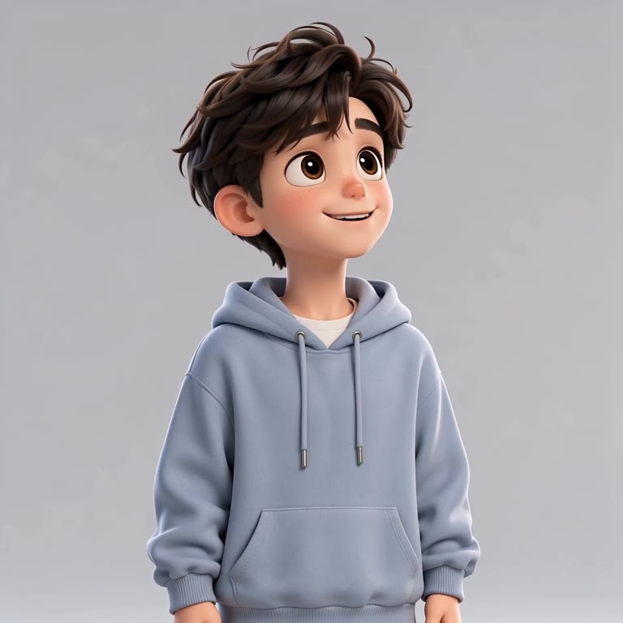
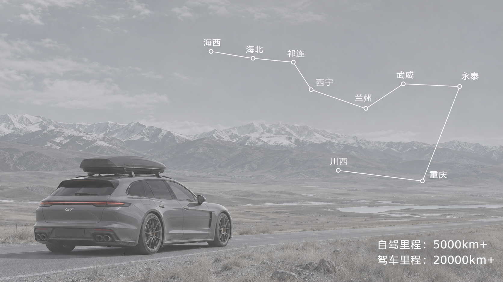
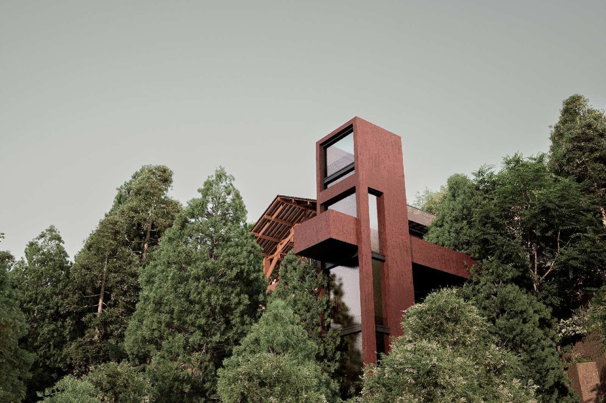

2026.08 — 2027.02
进行中 · 预计结束
进行中 · 预计结束
百度
产品经理 · 数字阅读业务平台
参与平台产品功能建设，与需求方沟通并挖掘业务需求。梳理内容生产入库、分发到收益结算的全链路流程，协调研发、测试、设计与运营资源，推动功能落地及线上内容维护。
查看详情产品 / AI / 建筑
From spaces to products.
重庆大学建筑学硕士在读。从建筑中的用户视角与系统思维出发，参与 ToB 产品建设，用 AI 把需求更快地变成可验证的方案。

李汶翰-简介
建筑的观察力，产品的行动力。PERSONAL AVATAR / 2026
从建筑与空间设计到产品工作，我关注真实用户如何行动、问题在哪里发生。曾参与京东地勤 CRM 陌生拜访能力从 0 到 1 的建设，经历业务调研、原型与 PRD、研发协同及上线推广的完整流程。持续实践 Vibe Coding、沉淀工作 Skill，将 AI 用于需求分析、原型搭建和数据分析。
目前就读于
重庆大学 · 建筑学硕士
关注方向
ToB 产品 / AI 产品
个人特长
摄影 / 建模 / 影像后期 / Vibecoding / 抽象思维
建筑学 · 硕士 / 985
建筑学 · 学士 / 985
产品经理 · 数字阅读业务平台
参与平台产品功能建设，与需求方沟通并挖掘业务需求。梳理内容生产入库、分发到收益结算的全链路流程，协调研发、测试、设计与运营资源，推动功能落地及线上内容维护。
查看详情建筑学长 · AIGC 模型训练 / Prompt 工程
负责建筑与室内两个赛道的风格化需求梳理、Prompt 设计和模型效果验证。基于 FLUX 底座独立训练并上线 8 个室内设计风格 LoRA 模型，将训练流程沉淀为可复用 SOP。
查看详情产品经理 · 地勤 CRM 平台
参与陌生拜访功能从 0 到 1 的建设，深入一线调研，负责业务流程、原型方案与 PRD，协同研发测试并参与推广。上线能力覆盖集团 3000+ BD，连接一线拜访与管理侧过程监控。
查看详情从业务问题出发，
走完一条交付路径。
陌生拜访
从线下到线上
App 作业流程 × PC 管理看板
建筑语境
转译为风格模型
从需求与 Prompt 到训练 SOP
车宠
养成系 Agent
懂车帝命题赛道 · C 端 AI 应用
一等奖
二等奖
全国 40 强 · Carpet 车宠
三等奖
发表于第十三届建筑与环境可持续发展国际会议
用户调研 · 需求洞察 · PRD 撰写
Axure 11 · Codex 原型 · Python
基于零代码 AI 工具的基础程序开发
Coze 工作流 · Vibe Coding
Prompt 撰写与优化 · 工作 Skill
FLUX / LoRA 风格化模型训练
Rhino 7 / 8 · SketchUp · AutoCAD
D5 渲染器 · Photoshop · InDesign
Lightroom · 达芬奇 · 剪映
摄影覆盖人像、建筑与风光，结合 Lightroom、Photoshop 完成影像后期；通过 Rhino、SketchUp 与 D5 表达空间与材质。
建筑 · 风光 · 光影
 02 / ARCHITECTURE
02 / ARCHITECTURE空间 · 造型 · 建模 · 参数化

03 / ROAD TRIPS人 · 车 · 生活

04 / RENDERINGD5 · 达芬奇 · 剪映